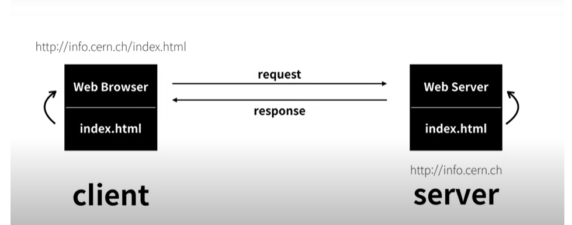

- MES
- ERP
- WMS
서버와 클라이언트
인터넷이 동작하는 기본적인
인터넷이 동작하기 위해서는 최소 몇대의 컴퓨터가 필요할까? --> 2대!!!
2대의 컴퓨터가 서로 정보를 주고 받은순간(이것을 인터넷이라고 부르게 된다.) 인류는 큰 역사를 가지게된다.
Web Browser <-> Web Server
Web Server가 설치되어있는 컴퓨터는 info.cern.ch 라는 주소를 가지고 있으며, (주소를 어떻게 가지는지는 마법이라고 일단 생각해라)
Main.html 이라는 파일이 저장되어 있다.
그리고 Web Browser 에다가 info.cern.ch/Main.html 이라고 주소를 땅! 쳤을때 어떻게 일어나는 지 알아보자 !!!!!!
info.cern.ch 이 웹서버에 Main.html 이라는 파일을 원합니다 라고 Requset 한다.
그럼 i/nfo.cern.ch 웹서버는 다시 쏴준다.(Respone) 전기적 신호로 바꿔서 그럼 웹브라우저에는 코드가 도착하게 된다. 그럼 그코드를 웹브라우저가 읽어서 화면에 표시한다.
그럼 웹이 동작하게 된다.
2가지 방법이 있다.
웹 호스팅 : 회사에 맡기는 것이다.
웹 서버 : 자신의 컴퓨터에 설치하는 개념
웹 호스팅을 해보고 나중에 웹 서버를 설치하는 개념을 공부한다.!
깃 허브 웹 호스팅

개발자 : 장진한 (010-2572-4134)